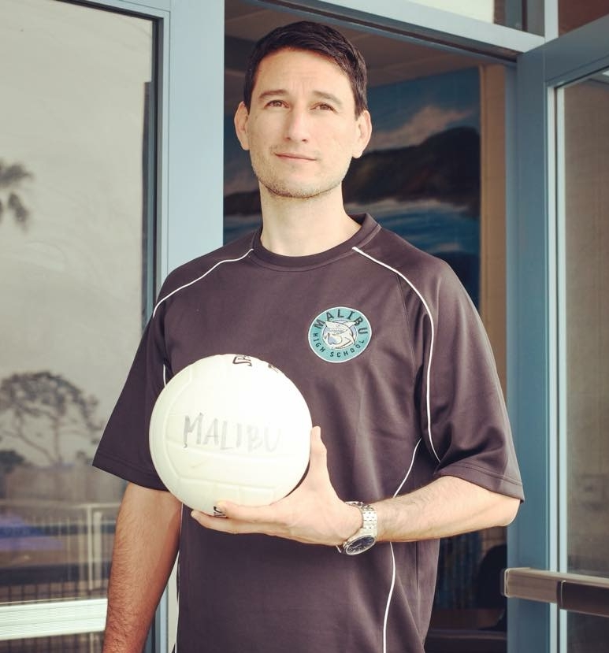
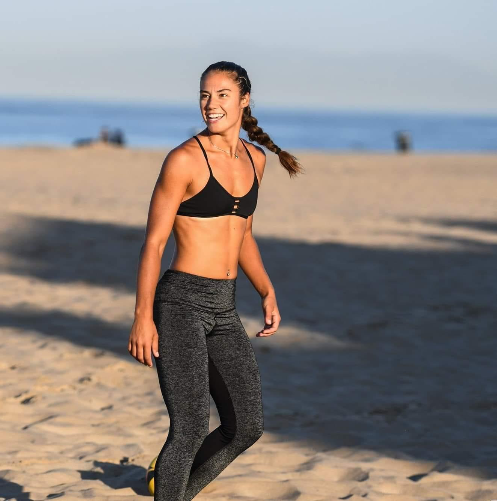
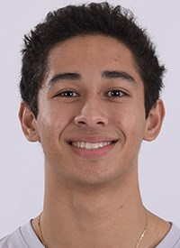
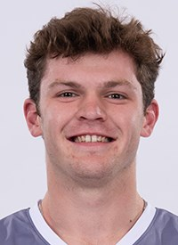
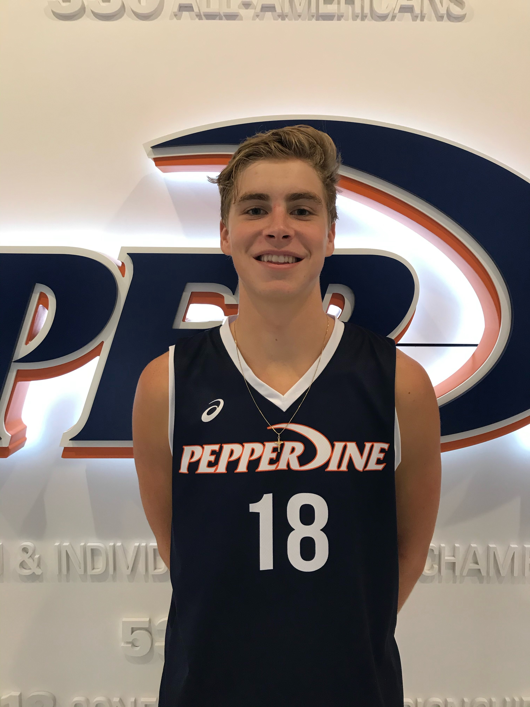

Our Coaches
 Derek is the club director of Malibu Volleyball Club. He is also the boys’ and girls’ Head Coach for Malibu High School. Prior to Malibu Derek has over 20 years of coaching experience at the college, club, and high school level. In 2017, he helped Notre Dame HS win their program’s first CIF title and finish Runner-up in the State tournament. Coaching club volleyball Derek has medaled at USA Junior Nationals twice: Gold in 2011 with Mizuno Long Beach in 16 Open as an assistant coach and on the boys’ side, Bronze in 2008 as head coach in 14 Open with Shock Volleyball Club. Collegiately, Derek has assisted at Irvine Valley College with their Men’s Program and at NCAA Division 2, West Chester University (PA). As a player, Derek played 3 years of Varsity at Granada Hills HS and then Pierce College. At Pierce College he helped the Brahmas win 2 CCAAA State Titles. He then transferred to CSUN and earned a degree in Philosophy. Continuing to play after college, Derek played CBVA AAA tournaments and had a VERY brief stay with the USA National Team as a practice player.
 Elina Domnidou, has competed internationally representing the Greek National team and currently participating in the P1440 AVP program run by Olympian Kerri Walsh. Outside of participating in beach volleyball, she has also played indoor at University of Winnipeg and pro volleyball in Austria. Her coaching experience includes both indoor and beach but is particularly excited to share her knowledge for beach because that’s where her passion lies. While the experience and skill levels may vary with this group, her goal is to introduce the fundamentals of beach volleyball in a fun and positive manner.
 Joe started playing volleyball for Balboa Bay Volleyball Club (Newport Beach, CA) at 12. He was captain of his teams from 13’s through 18’s and in that time was MVP at USA Junior Nationals twice and medaled 3 times: 1 Bronze and 2 consecutive Gold medals. Joe began training with the National Team program in 2015 and has since travel the world with Team USA, including competing in the FIVB 19U World Championships. In high school, Joe was a 4-year starter for Newport Harbor HS and finished his high school career with a CIF, State, and National Championship. He is currently on the Pepperdine Men’s Volleyball team and a trainer for Malibu Volleyball Club.
 Spencer started playing volleyball at 6 years old for east coast power Rochester Bootlegger Volleyball Club. During his 12 years with their program Spencer won 3 East Coast Championships and earned a Bronze at USA Junior Nationals in 16 Open. In high school, Spencer received AVCA All-American honors and was listed to the FAB 50 list in his senior season and was also selected to the USA Youth National Team. Spencer is now on the Pepperdine Men’s Volleyball team and helped his team get to the NCAA Final Four in his sophomore season. He is his 2 nd season as a trainer for Malibu Volleyball Club.
 Trey started playing volleyball for Academy Volleyball Club (NY) at 11. He was a 4- year starter in HS and in his senior year was the New York State Player of the Year and a FAB 50 selection. He also made the Newsday’s Long Island All-Decade Top 50 Athletes list. Trey was also selected to the USA Volleyball A1 roster twice. Currently he is on the Pepperdine Men’s Volleyball team and a trainer for Malibu Volleyball Club.